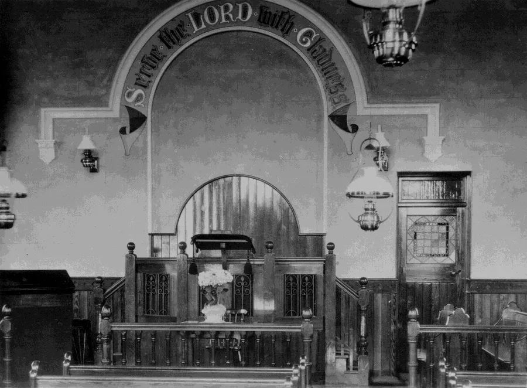
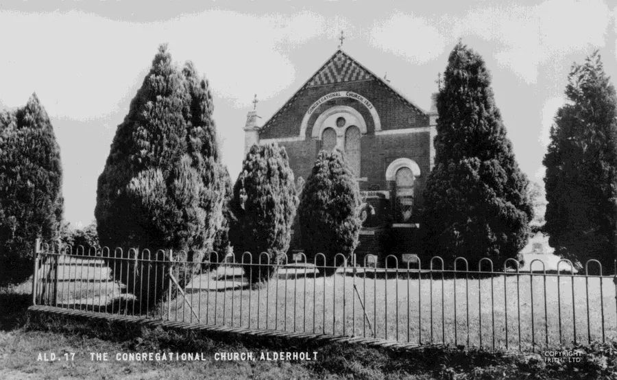
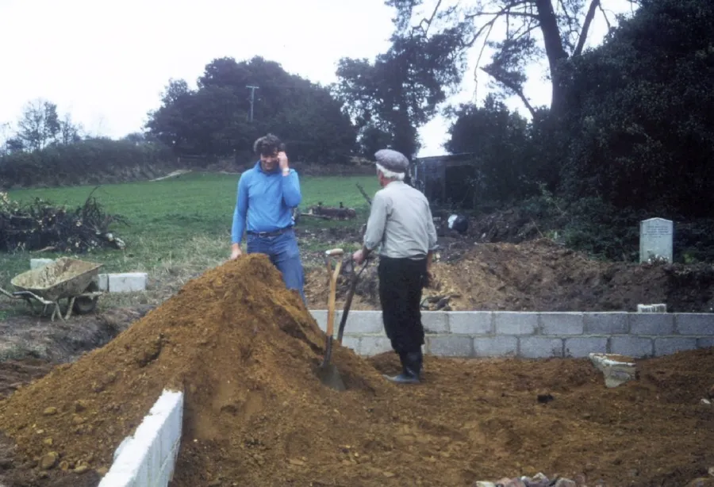
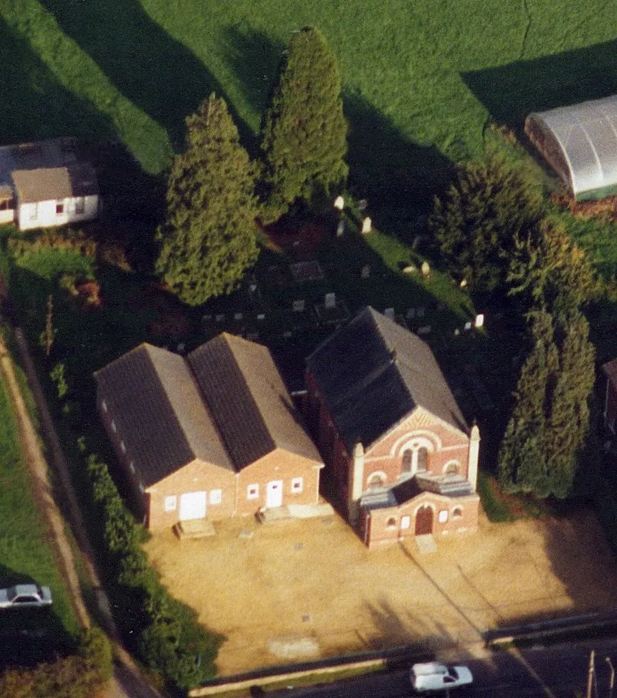
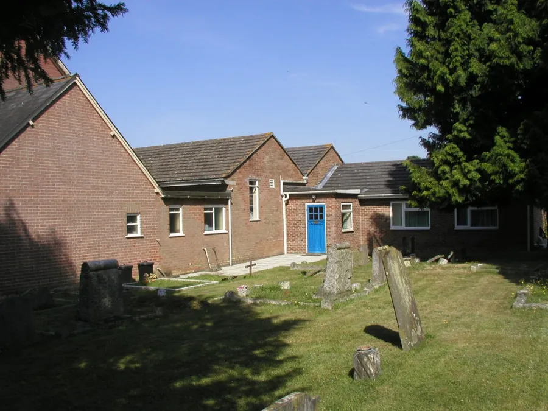
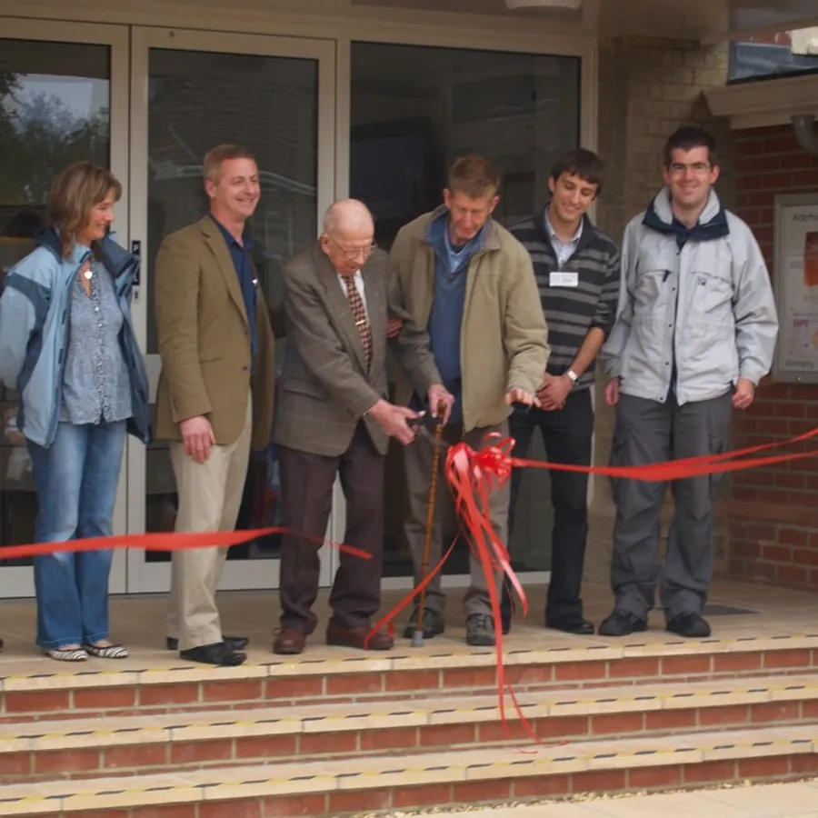
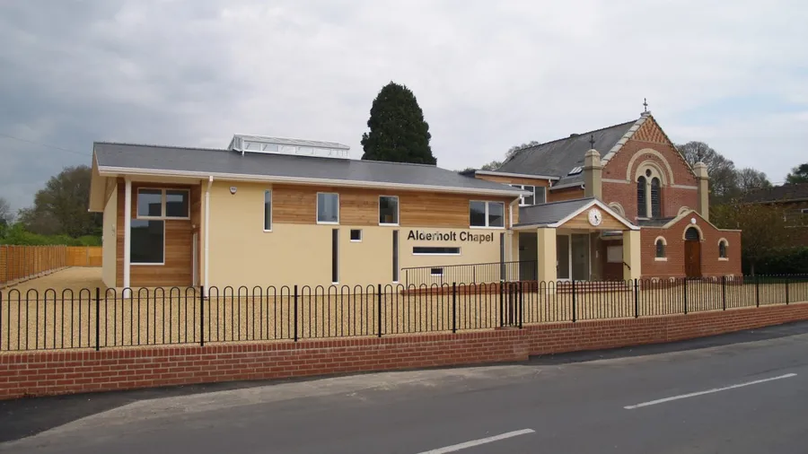
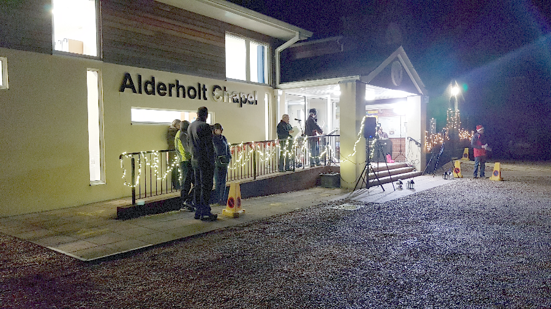

Alderholt Chapel Centenary – Part III
by Adrian King

But still the Old Chapel saga continued.
On 14th November 1957 Mrs. Deacon asked a Church meeting if the seats at the Old Chapel could be removed at a convenient time. Prior to this the Damerham Youth for Christ had shown an interest in purchasing some of the seats. It was thought that a nominal sum of £5 might be asked for if they were still interested. A suitable offer had been made by 26th June 1958 and it was decided to dispose of all the seats except the short ones.
Stan Broomfield said that with reference to an agreement between Bert Pressey and Clifford Sims
"About 10+ of these seats were given to the Tabernacle for use within the marquee at [the] anniversary time celebration tea and with the evening meeting held in the marquee to accommodate members attending. After much needed repairs to make them safe they were used for many years until the marquee was no longer used.”
The old chapel seats were used in the marquee when the Earls Court Billy Graham Crusade was relayed in 1983.
After 1957 references to the Old Chapel cease. It is known that the Old Chapel was demolished along with adjacent cottages and the land used for building 159 Station Road after 1957–58.
The New Chapel

The new chapel building was not without its own problems. In 1927 Mr. Stainer was asked to stain and varnish the front door. Stonework was beginning to deteriorate by 1930 and it was decided to approach a Bournemouth stonemason to see if the matter could be sorted out. The problem occurred again in 1933.
The Church has always had willing helpers. Mr. Beal fitted battery-powered lighting for the platform and path leading to the church. He even kept the batteries charged. Generous gifts have enabled a more comfortable environment. A communion tray with thirty-two glasses was purchased for £4 12s. 0d. with the gift from the estate of Miss Taylor. In 1936 Mr. Benjamin Hayter’s legacy of £20 was set aside to be used towards electric lighting to replace the oil lights.
Oil lighting had been a problem in the past when in 1915 a lamp in the Old Chapel fell down. Emma Read wrote to her son Bob
“Louie Bailey called the other evening to see us and told us that one of the larger chapel lamps at Alderholt Chapel fell during the service on Sunday evening. All on fire it became but not much damage done. The people all ran out of the chapel but came back again when things were put a bit straight again.”
There were incidents of vandalism in 1949. Stones were being thrown in the grass and at the church windows. Flowers were being damaged on the graves. Two panes of glass were broken while the caretaker Mrs. Wallis was on the premises and she was able to apprehend the lad involved. The Church took this matter seriously. The boys’ parents were informed as were the police constable and the school authorities.

It is interesting to note how traditions start. In 1924 it was decided that with the commencement of services in the new chapel offerings would no longer be taken up at the door as the congregation left, but would be taken during the service "according to common custom."
Further to this in 1949 a meeting proposed that a more dignified and reverent mode of undertaking the offering be instituted. It was suggested that
"The sidesmen commence and finish the collection at the entrance doors and advance to the communion table together. The preacher meanwhile taking his stand at the table to receive the offerings with the sidesmen to wait while the offertory prayer was made.”
The practice continued until worship was moved to the two halls when the chapel became too small after 2000.
The Chapel did not covenant with the Congregational Union in 1967 and remained independent not joining with the United Reformed Church (URC).

From the 1960s onwards the Church embarked on a programme of redevelopment. A new hall, kitchen and toilet accommodation were added in 1973–74 at a cost of £6602.79. The work was quoted for on 9th June 1973 by W. J. F. Shering & Sons (Builders) Ltd and completed by them by 17th May 1974. At the same time the corners of the front entrance porch were taken down and rebuilt and the roof and leadwork reconstructed. The leaded windows were repaired and reinstated all at a cost of £731.22.

In 1980–81 Mrs. Edith Pinhorn gave a strip of land and a second hall was built on it. Anton and Manston Building Contractors completed the work at a cost of £7459.79 for the main building and £831.29 for decorating. The vestibule was enlarged to include toilet facilities. In 1999–2000 a church lounge with storeroom was built at the back of the second hall. This still remains as it was integrated into the new build of 2010–11.

Bruce Jenkins reintroduced Elders and Deacons in 1999. The Church called its own Pastor in 2001 and the Rev Doctor Chris Sinkinson was inducted on 24th November 2001. At the same service a tree in memory of Herbert Pressey was dedicated.
During the first years of the millennium the lead was stolen from the vestibule roof and had to be replaced with a plastic alternative. EFCC Ltd* were appointed as Trustees in 2004.

The growing church found that the old building was too small and Sunday worship was temporarily moved to the two halls in 2006. The Church sought ways of getting over this problem and in 2007 plans were passed to demolish the two halls and build a multipurpose hall in their place to seat about 200 people. The old church would be fitted with a mezzanine floor and the back rooms demolished and a two-storey extension built in its place.
To be able to do this would mean the purchase of the land next door which had been used by Barry Wallis for his funeral business. The garage on the site would need to be demolished. The land was bought at a price because it already had planning permission for a detached building. Most of the funding was in place by the spring of 2010 and building commenced in August.
For the duration of the project the fellowship met in the village hall from May on Sunday mornings and initially at the chapel on Sunday evenings. That was until the builders took possession of the site in early August when the fellowship met at Stuckton Chapel for the evening services. The Christmas Day Service was at Stuckton Chapel. The Youth Groups met in Alderholt St. James CE School on Mondays and Tuesdays. The new building was opened on 28th May 2011.

In September 2011 the Chapel took on Chris Bishop as an Assistant Pastor and he was employed by the Chapel for two days a week. The remaining days he worked at Burgate School in Fordingbridge as a teaching assistant. Chris had previously been a placement student from Moorlands and this was his first post. In 2012 Chris Sinkinson told the Chapel that he would be taking full-time employment at Moorlands where he had previously been working part-time. He suggested that the Chapel should change to a team ministry. He would change to the role of preaching elder and Chris Bishop would take on more responsibility with also a post being created as Pastor for Evangelism. Jonathan Paterson was employed to this post in September 2012, a position he held until his resignation in April 2017.

Then Chris Bishop took over the role of Pastor with much assistance from the Elders and Deacons. He had an eight-week sabbatical in the summer of 2019. Ros Sinkinson became Youth and Community worker in January 2019 with the position made permanent in 2022. Chris Bishop accepted a call to West Cliff Baptist Church and following a farewell function on Sunday 10th November 2019, his last services were on 17th November 2019. He was inducted at West Cliff on 30th November 2019.
During the Coronavirus Pandemic of 2020–21 from Sunday 22nd March 2020 all morning services were live streamed on Facebook. The evening services were recorded and streamed on Facebook with these transferred to Zoom on 26th July for a live service. There were Carols in the Carpark on Sunday 20th December 2020. Two sessions were booked and the services were also streamed to those not attending. In January 2021 the streaming service was transferred to the OnlineChurch platform with the evening service still being on Zoom. Zoom was used for all the Members Meetings during the lockdowns.

After a year without entering the church building evening services eventually commenced in the chapel on 26th April 2021 and morning services on 23rd May 2021. Social distancing was observed, of course. Groups began reopening in September–October 2021. The church began opening up towards the end of the year and most groups were in the building with the lifting of all restrictions in February 2022.
After a couple of years without a Pastor in January 2022 Ross Wilkinson was called to the pastorate. Ross was inducted on 25th September 2022. In 2022 the trusteeship was returned to the church.
And now for the next 100 years...
Copyright Adrian King
* EFCC—The Evangelical Fellowship of Congregational Churches Trust Corporation Limited